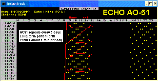

LEO Azimuth Tracking!
Two Simple Tracking Ideas:
Computer-less LEO tracking: All satellite orbits are consistent and repeatable,
such as AO51 shown above that repeats every 5 days.
See how to
predict pass times based simply on knowing the time-to-next pass!
Using Simple AZ-only TV rotators: This topic is covered in the remainder of this page.
For almost all of the Low
Earth Orbiting (LEO) amateur satellites a modest beam antenna fixed at 15 degrees elevation is more than
adequate to bring in signals from the digital packet and voice FM downlinks to
your dual band FM radio. A simple TV rotator and modest beam is all that is
required. This is a bargain compared to the typical AZ/EL OSCAR class
satellite tracking station. And it also serves perfectly well for terrestrial VHF/UHF work as well.
 The simple Azimuth-only tracking system takes advantage of the geometry of low
earth orbiting satellites which are within view of a 15 degree fixed elevation
beam over 96% of all pass times. In this
region, using a short 4 to 6 element beam, your station will be able to
maintain over 10 dB of relative gain on the bird whenever it is in view.
The drawing on the right shows the Earth and the typical LEO orbit
to scale. It is clearly seen, that
satellites are rarely “overhead” and spend most of their in-view times well
below 30 degrees. Another revealing observation
is that when satellites are higher in elevation, they are also 6 to 10 dB
closer. This means that for operating
LEO satellites, you need maximum gain on the horizon and can get by with gain at high elevations.
Angles are shown on the left and percents and path loss are shown on the right.
The simple Azimuth-only tracking system takes advantage of the geometry of low
earth orbiting satellites which are within view of a 15 degree fixed elevation
beam over 96% of all pass times. In this
region, using a short 4 to 6 element beam, your station will be able to
maintain over 10 dB of relative gain on the bird whenever it is in view.
The drawing on the right shows the Earth and the typical LEO orbit
to scale. It is clearly seen, that
satellites are rarely “overhead” and spend most of their in-view times well
below 30 degrees. Another revealing observation
is that when satellites are higher in elevation, they are also 6 to 10 dB
closer. This means that for operating
LEO satellites, you need maximum gain on the horizon and can get by with gain at high elevations.
Angles are shown on the left and percents and path loss are shown on the right.
Low Earth orbits are unique because:
4-6 elements are enough gain to be above digital and FM voice thresholds.
Most LEO birds are vertical polarization most of the time.
LEO satellites are below 45 deg 95% of the time and 6 to 10 dB closer when above it as shown below:
Another way to look at the same geometery is to plot the percentage of time that the satellite is within
each ten degrees of elevation as shown to the right.
Now let's superimpose a typical 6 element beam antenna
pattern pointed at the horizon on the above range and angle plots.
Looking at the plot below, the 6 element beam shows about 10.5
dBi gain towards distant satellites on the horizon which falls off by 3 dB
at 30 degrees and by about 7 dB at 45 degrees.
This antenna would perform EXCELLENTLY as
both a terrestrial and satellite antenna, since almost 85% of all satellite pass
times are within the 3 dB beamwidth of the antenna. And the other 15% above 30 degrees are easily
10 dB closer as shown above!


The savy operator will notice that he can raise the tilt
angle from 0 degrees to about 15 degees with no meaningful loss
on the horizon (1 dB) while gaining a few dB for the small time
the satellite is above 30 degrees. But in no case should
the antenna be elevated any further because the loss of gain in the 0 to 15
degree range where satellites spend fully 50% of their time should not be
compromised.
The following table is a plot
of overall gain for the elevation angles shown. Notice the cumulative
percent column showing 96% of all pass times are below 50 degrees.
This shows how a beam
aimed about 10 to 15 degrees above the horizon will give you maximum gain on
the horizon where you need it most, and yet still give you a good signal all
the way in closer and higher to overhead.
As the gain of the beam drops off at high elevation, that gain is made
up by the satellite being much closer.
Tilting an antenna any higher than about 15 degrees will sacrifice gain
where you need it most (on the horizon), and give you gain where you need it least.
Of course, if you cannot see the horizon from
your location, then a higher up-tilt makes sense, but then, a smaller antenna
probably 3 or 4 elements will do since the signals will be so much stronger..
* Data for an 800 km orbit. For the ISS at 370 km, the times below 30 degrees are 6% higher.
* If your horizon is blocked below 5 degrees anyway, elevate the beam to 20 deg to improve gain (+2 dB)